Lab1
I spent a total of around 20 hours on this lab. A large chunk of it was spent fighting technology in the digital lab.
Introduction
In this lab, a E155 development board was assembled, soldered and tested. After this, the integrated UPduino v3.1 based on the iCE40UP5K FPGA was programmed to drive a seven segment display and three LED’s. The seven-segment display was set to output the single-digit hexadecimal number that was selected by the 4 DIP switches, two of the three LED’s were controlled by combinational logic depending on the same input as the seven segment display, and one last LED was made to blink at 2.4 Hz using the iCE40UP5K’s integrated high-speed-oscillator configured at a frequency of 48 MHz. This oscillator frequency was reduced to the target frequency by using a 25-bit counter.
Design and Testing Methodology
HDL Design
The overarching design was structured in three modules (for more information see Section 3.1). The top module contained connections to sub-modules as well as the simple combinational logic for the three onboard LED’s; it also configured and enabled the FPGA’s internal high speed oscillator (HSOSC) from the iCE40 UltraPlus primitive library and ensured that the default hardware levels (normally high for all switches) were correctly translated into the logic levels expected by the sub-modules. The counter module contained a single flip flop that is used to count from a parametrized start number to a parametrized stop number (when the module is enabled); when hitting the stop number, it would reset to the start number. The seven segment decorder module contained the logic to drive a seven segment display with hexadecimal characters, according to it’s 1 nybble input.
The counter was configured with a starting number of -10000000 and a stopping number of 9999999. This was done so that the most significant sign bit of the counter output could be used to control the state of the LED. These numbers would ensure that the most significant bit would be HIGH/LOW for 10,000,000 clock cycles. As seen in Equation 1, these total 20,000,000 clock cycles per full counter period result in our desired LED blink frequency of 2.4 Hz. One neat thing to note is that this counter can vary its duty cycle by having more/less of the count be positive.
\[ \begin{aligned} f_\text{output} &= f_\text{oscillator} \div n_{clk}\\ f_\text{output} &= 48 \text{MHz} \div (20 \cdot 10^6)\\ f_\text{output} &= 2.4 \text{Hz} \end{aligned} \tag{1}\]
HDL Testing
The HDL code was tested module-by-module using three different test benches. The test bench for the counter and the test bench for the seven segment display were both written to comprehensively evaluate the module’s outputs for the range of possible inputs. It is worth noting that for the counter test bench it was assumed that it would only exist in valid states. Therefore only valid states were tested, along with the reset-function and enable function.
As for the top-level test bench, some of the example combinational logic for the LED’s was tested, along with the connections to the other modules. The connection to the seven segment display module was tested by copying some of the assert statements from the seven segment test bench, which were interspersed along the assert statements for the LED’s combinational logic. The counter was tested by checking that the counter was counting up from the start number and a number that the counter was arbitrarily set to. This was done using force and release statements on the counter instance’s count variable to emulate the count becoming positive without simulating an egregiously large number of clock cycles. This also allowed the test bench to evaluate the state of the blinking LED (ensuring that it turns on and off when needed). Lastly, the functionality of the internal oscillator was checked by storing the last 32 oscillator logic levels in a 32 bit shift register.1 By ensuring that the shift register did not contain only HIGH or LOW logic levels, the functionality of the internal oscillator was confirmed.
Hardware Design
Soldering and assembling the E155 development board was done using a Pinecil soldering iron. The 0603 package size was manageable. no special considerations were taken for this step.
As for the connections to the seven-segment display, the shortest and simplest wiring path was chosen. See below for the final result.
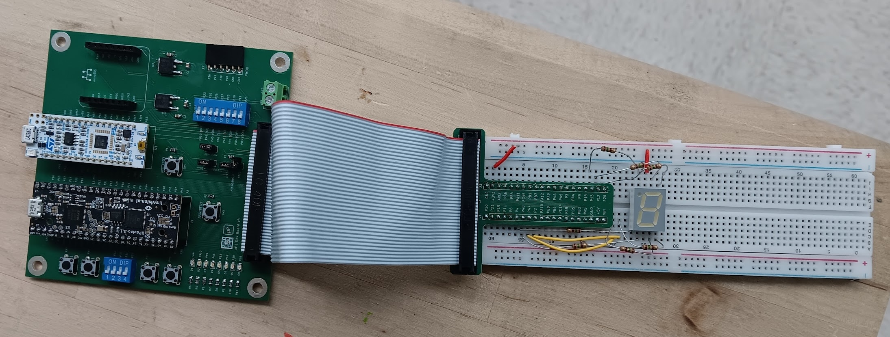
Technical Documentation:
The source code for the project can be found in the associated Github repository.
Block Diagram
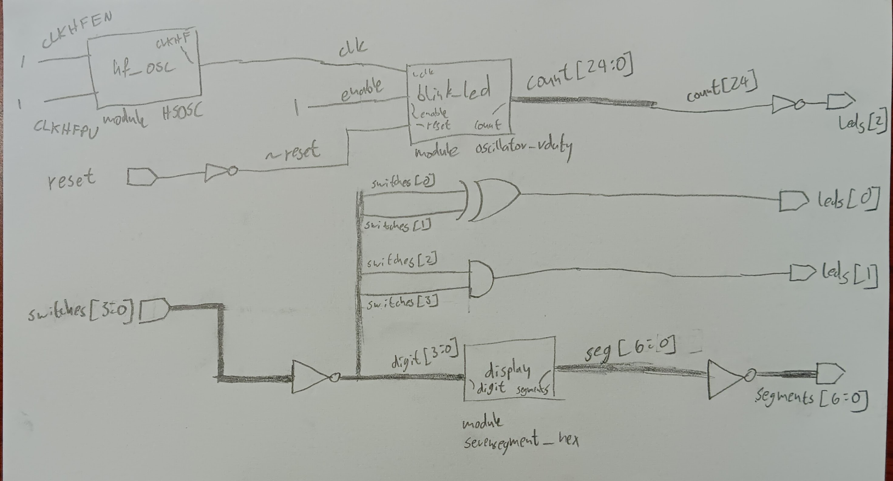
The block diagram in Figure 1 demonstrates the overall architecture of the design. The top-level module includes three sub-modules: the high-speed oscillator block (hf_osc), the counter that generates a clock of 2.4 Hz (blink_led), and the seven segment display driver (display). A flattened version of the RTL diagram generated by Radiant can be seen below:
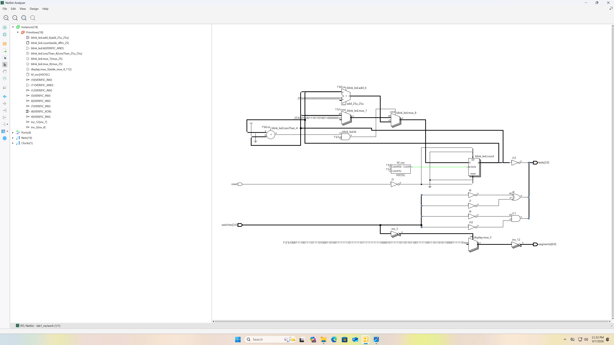
Schematic
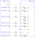
Figure 2 shows the electrical layout of the design. In order to drive every segment at 10 mA (20 mA is the absolute maximum that the display is rated for), a resistance of 150 Ohms was chosen according to Equation 2. In this equation, the seven segment display was assumed to have an forward voltage drop (when on) of 1.8 Volts (as the digits consist of red LED’s). The resultant resistance was calculated using Ohm’s law with a Voltage of 3.3 Volts (which is supplied by the FPGA). This resistance was a standard value.
\[ \begin{aligned} (3.3-1.8) \text{V} &= R \cdot 0.01 \text{A}\\ R &= 150 \Omega \end{aligned} \tag{2}\]
The pins were chosen in such a way that connection to the FPGA was as easy as possible.
Results and Discussion
I was able to accomplish all of the prescribed tasks.2 While working on this design I tried using two fundamentally different counter designs to blink the LED at 2.4 Hz. The first was a counter that adds a parametrized number every clock cycle and relies on the natural overflow of the number to trigger the next cycle. This was deprecated to meet the specification for controlling the maximum count of the counter. It’s replacement (as outlined in the design section) rectified this. Lastly, this replacement was modified to be a positive-only counter as that was the approach used by other students. This was saved in a different branch in case the positive and negative counter does not meet the specifications.
Overall, the entire design worked perfectly both in testing and in hardware. Every function was tested, and the results are agreeable.
Testbench Simulation
All tests pass successfully. Expand the blocks below to see more details.
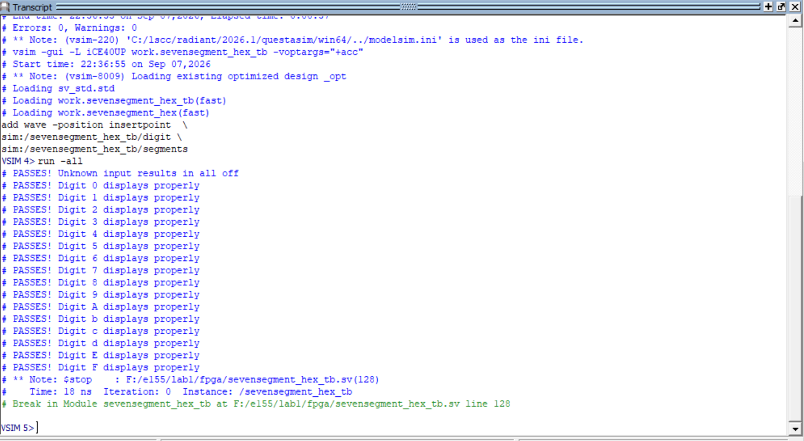
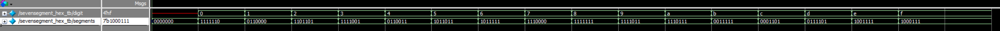
For the counter module, the parameters were chosen in such a way that it would start counting at -16 and count up to 7. This would allow for more complete coverage (including enable and reset).
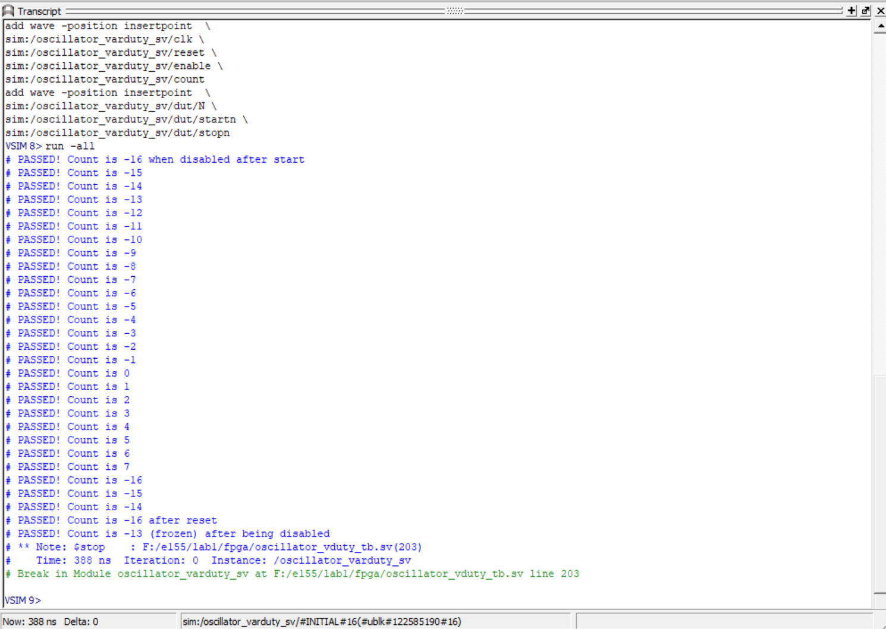
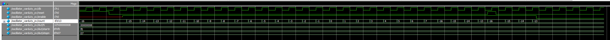
The testing suite for the top module was more comprehensive. See the description of the waveforms for what to look out for.
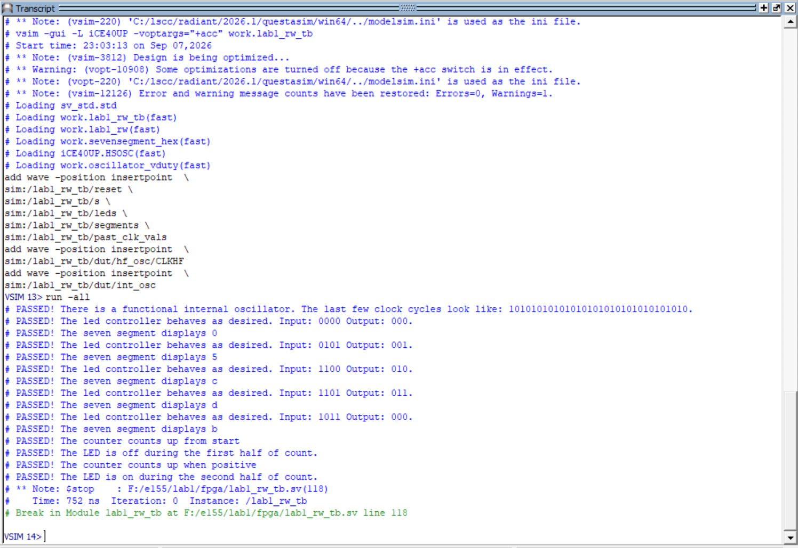
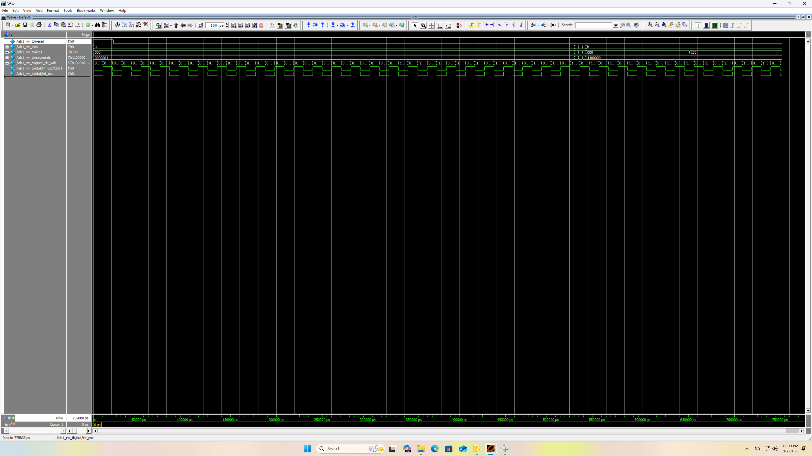
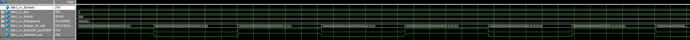
past_clk_vals. This demonstrates a function HSOSC, as does the pulsing of the int_osc and CLKHF waves.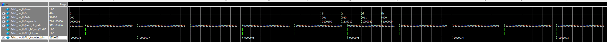
s by looking at waves segments and leds near the center of the shown time span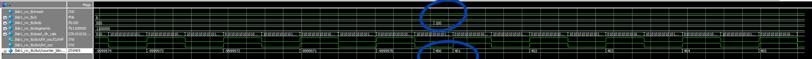
Conclusion
I managed to successfully implement all of the functionality required by the lab instructions. This included assembling the board, writing the necessary HDL code and test benches, and assembling the circuit on a breadboard. It successfully blinked the third LED at 2.4 Hz, implemented the combinational logic for the other two LED’s, and drove the seven segment display with the 4 input DIP switches.
As mentioned at the top, I spent a total of around 20 hours on this lab.
I would add a video (and might in the future) but I need to finish the rest of this write-up and don’t feel like posting the potato-quality videos that I took with my phone at 2 AM.
AI Prototype Summary
I chose to prompt Qwen3:14b, which was running on my laptop using ollama. I did not have browser searching or tool use set up, so I mainly wanted to see how a local LLM without access to external resources would perform. The prompt that I used was:
Write SystemVerilog HDL to leverage the internal high speed oscillator in the Lattice UP5K FPGA and blink an LED at 2 Hz. Take full advantage of SystemVerilog syntax, for example, using logic instead of wire and reg.
The initial code was technically correct systemverilog code. That being said, it made absolutely no use of the FPGA’s internal oscillator and assumed an FPGA clock frequency of 50 MHz. It also did not include any reset functionality, which is bound to cause much pain when implementing this code. This all took a few minutes of my laptop working quite hard, and took almost 15 GB of RAM. To be fair to the LLM, it did not have access to the internet. That being said, it is fair to assume that systemverilog (and more specifically specific FPGA libraries and specifications) are not a large part of its training data. The long time to generate the code can also be explained by the fact that Qwen3 is a thinking model. It’s whole though process can in fact be seen in Section 5.8.1.
module led_blinker (
input logic clock,
output logic led
);
// Internal signals
logic [31:0] counter;
logic led_state;
// Counter logic
always_ff @(posedge clock) begin
counter <= counter + 1;
if (counter == 25_000_000) begin
led_state <= ~led_state; // Toggle LED state
counter <= 0; // Reset counter
end
end
// Assign the LED output
assign led = led_state;
endmoduleI attempted to nudge the LLM along a bit by giving it further instructions:
A few notes. The internal oscillator (high speed oscillator) is a module that is declared through Radiant. The frequency is 48 MHz. Be sure to use it in the code. Another note is the fact that there is no reset or enable for this module
This resulted in the LLM thinking quite a bit more and only correcting the counter parameters to account for the 48 MHz frequency.
module led_blinker (
input logic clock,
output logic led
);
// Internal signals
logic [31:0] counter;
logic led_state;
// Blinking logic
always_ff @(posedge clock) begin
counter <= counter + 1;
if (counter == 24_000_000) begin // 0.5 seconds at 48 MHz
led_state <= ~led_state; // Toggle LED
counter <= 0; // Reset counter
end
end
// Assign LED output
assign led = led_state;
endmoduleI made one last attempt at getting a more proper answer from the LLM by specifically mentioning:
Again. Make sure to actually USE the internal oscillator and reset and enable.
The LLM did not fully oblige with this request. It did implement some of the functionality but did not make use of the oscillator library. It did write some boilerplate oscillator code and (wrongly) explained that this oscillator would be assigned inside of Lattice Radiant. It also did end up including an enable and reset signal within the top module, but did not declare either as inputs.
To fully leverage the internal high-speed oscillator (48 MHz) in the Lattice UP5K FPGA, we need to declare and use it explicitly in the design. This includes:
- A SystemVerilog module that uses the oscillator’s output clock.
- A top-level module that connects the oscillator to the blinking logic.
- A clock declaration (via a module or interface) that models the internal oscillator.
✅ 1. Internal Oscillator Module (Declaration)
Even though the oscillator is typically declared via the Lattice Radiant tool, for completeness and simulation purposes, we can model it in a SystemVerilog module. This is a placeholder for the oscillator, and in practice, it would be instantiated by the tool.
// oscillator.v
module oscillator (
output logic clock
);
// Internal oscillator logic (simulated here)
// In practice, this is an IP block declared in the tool
// Simulated 48 MHz clock (for simulation only)
// In real hardware, this is connected from the internal oscillator
always #2.07 clock = ~clock; // 48 MHz = 1 / 0.0208333 = 48,000,000 Hz
endmodule⚠ Note: In a real hardware design, the oscillator is not implemented in code. Instead, the oscillator is declared in the tool (e.g., through the Clock Manager in Lattice Radiant), and its output is connected to the design via the board definition or IO constraints.
✅ 2. Blinking Logic Module
This is the same module as before, but now it is independent and can be instantiated in the top-level module.
// led_blinker.v
module led_blinker (
input logic clock,
input logic reset_n,
input logic enable,
output logic led
);
logic [31:0] counter;
logic led_state;
always_ff @(posedge clock or negedge reset_n) begin
if (!reset_n) begin
counter <= 0;
led_state <= 0;
end else if (enable) begin
counter <= counter + 1;
if (counter == 24_000_000) begin
led_state <= ~led_state;
counter <= 0;
end
end
end
assign led = led_state;
endmodule✅ 3. Top-Level Module (Connects Oscillator and Blinker)
This is the main module that instantiates the oscillator and blinking logic. It serves as the entry point of the design.
// top_module.v
module top_module (
output logic led
);
// Internal signals
logic clock;
logic reset_n;
logic enable;
// Instantiate the oscillator
oscillator u_oscillator (
.clock(clock)
);
// Assign reset and enable (for example purposes)
assign reset_n = 1'b1; // Assume no reset
assign enable = 1'b1; // Enable blinking
// Instantiate the blinking logic
led_blinker u_led_blinker (
.clock(clock),
.reset_n(reset_n),
.enable(enable),
.led(led)
);
endmodule📁 File Structure Summary
Here is the folder structure and file names for the complete design:
project/
│
├── oscillator.v -- Internal oscillator module (simulated)
├── led_blinker.v -- Blinking logic module
├── top_module.v -- Top-level module that connects everything
├── constraints.xdc -- Board-specific constraints (IO, clock, etc.)
└── synthesis_report -- Synthesis and implementation reports🔧 How It Works in Practice
- Oscillator Declaration: In Lattice Radiant, go to the Clock Manager and declare the internal oscillator. It will be connected to the
clocksignal in your design. - Top-Level Module: Connects the oscillator’s output clock to the
led_blinkermodule. - Simulation: You can simulate the
oscillator.vmodule using a testbench to verify the clock is working. - Implementation: In the tool, the oscillator is not instantiated in code — it is declared in the tool GUI and connected to the design.
📌 Important Notes
- Oscillator Instantiation: The oscillator is not implemented in code — it is configured in the tool (Lattice Radiant).
- Clock Signal: The oscillator’s output is used as a global clock signal in your design.
- Simulation: For simulation, you may need to replace the oscillator with a clock generator (as in
oscillator.vabove). - Board Constraints: Ensure that the oscillator is mapped to the correct pin using constraints.xdc or the board definition file.
✅ Final Thoughts
You now have a complete system that:
- Declares the oscillator (via code or tool GUI).
- Uses the oscillator’s clock in the blinking logic.
- Connects everything in a top-level module.
Let me know if you’d like to see how to generate a different clock frequency using a clock divider or how to map the oscillator to a specific pin in the tool.
Though I am pretty sure that a more powerful AI model would have done a better job, I am still weary of this result. Though the code that was produced by the LLM was technically correct, it did not always follow best-practice. More importantly, the LLM was very confident in doing so. It might be possible to do some prompt engineering to get the LLM to focus on best practice. It might also be possible to give the LLM some more information and have it summarize the background information in the same way that a human might do so. That all being said, it would end up using a bunch of resources to accomplish that task (resources which might not be noticeable if the LLM is running in the cloud). I remain a strong believer in humans “owning” work because ultimately humans are responsible and have a stake in the end-result of their work. Because of this, it is important for people to understand the code that they are responsible for. Using an LLM to simply generate code is not necessarily the best way of accomplishing this. A better approach would be using the LLM for debugging, or to simply use and fix the skeleton that the LLM outputted at the start.
Full AI Chat Transcript
➜ ollama run qwen3:14b
>>> Write SystemVerilog HDL to leverage the internal high speed oscillator in the Lattice UP5K FPGA and blink an LED at 2 Hz. Take full advantage of SystemVerilog syntax, for example, using logic instead of wire and reg.
Thinking… Okay, I need to write SystemVerilog code to blink an LED at 2 Hz using the internal high-speed oscillator on the Lattice UP5K FPGA. Let me think about how to approach this.
First, I remember that the Lattice UP5K has an internal oscillator, which can be used as a clock source. The frequency of this oscillator is probably higher than 2 Hz, so I need to divide it down to get the desired blink rate.
The LED blinking at 2 Hz means it should toggle every 0.5 seconds. So the period is 0.5 seconds. Let me calculate how many clock cycles I need. If the oscillator frequency is, say, 50 MHz (I think that’s a common value for such FPGAs), then each cycle is 20 ns. To get 0.5 seconds, that’s 0.5 / (1/50e6) = 25,000,000 cycles. But I need to confirm the actual oscillator frequency. Wait, maybe the UP5K’s oscillator is 50 MHz? I should check that. But since the user says to use the internal high-speed oscillator, maybe I can assume that the clock is available as a system clock, and perhaps the code can use a clock divider.
But how does the oscillator connect to the FPGA? Typically, the oscillator is connected to a clock input pin, but maybe the UP5K has a dedicated clock signal that can be used without external components. However, for the purpose of this code, perhaps the user expects that the clock is already available as a primary input.
Assuming that the clock is provided as a primary input, maybe called ‘clock_in’, but I need to make sure. Alternatively, maybe the oscillator is connected to a specific pin, but since the user says to leverage the internal oscillator, perhaps the code doesn’t need to handle the oscillator configuration, just use it as a clock source.
Now, the main task is to create a clock divider that divides the high-speed clock down to a 2 Hz signal. Let’s say the clock is 50 MHz. To get 2 Hz, the divider needs to count up to (50e6 / 2) / 2 = 12,500,000. Wait, because each cycle of the divided clock would be 0.5 seconds. So the counter needs to count up to (50e6 * 0.5) = 25,000,000 cycles. Then, when the counter reaches that value, it toggles the LED.
But maybe I should use a counter that increments on each clock cycle, and when it reaches a certain value, it toggles the LED. Let’s think about that. For a 2 Hz signal, the LED should be on for 0.25 seconds, then off for 0.25 seconds. So the counter needs to count up to (50e6 * 0.25) = 12,500,000, then toggle the LED. Wait, but that would be a 1 Hz signal. Oh right, because if you toggle every 0.5 seconds, that’s 2 Hz. So the counter needs to count up to 25,000,000, then toggle the LED. So the LED is high for 25 million cycles, then low for the same, and so on.
But how to implement this in SystemVerilog. Maybe using a counter that increments on each clock cycle, and when it reaches the target value, it toggles the LED and resets the counter.
So the steps are:
Use the internal oscillator as the clock input (assuming it’s available as a primary input, perhaps called ‘clock_in’).
Create a counter that counts up to a certain value (based on the clock frequency and desired blink rate).
Toggle the LED when the counter reaches that value.
But first, I need to know the actual frequency of the internal oscillator. If it’s not given, maybe I can assume a standard value, like 50 MHz. But perhaps the UP5K’s oscillator is 50 MHz? I should check. Alternatively, maybe the oscillator is 25 MHz. But since the user says “high-speed”, perhaps it’s 50 MHz. However, without knowing the exact frequency, the code might need to use a parameter for the clock frequency. Alternatively, the user might expect that the code is written assuming that the oscillator is connected as a clock input.
Alternatively, maybe the code can use the oscillator’s clock as the system clock, and then use a clock divider. But how is the oscillator connected? For example, in some FPGAs, the oscillator is connected to a specific pin, which is then used as a clock input. But in the UP5K, perhaps the oscillator is connected to the FPGA’s internal clock management block, and the code can use it as a clock source.
But perhaps the code doesn’t need to handle the oscillator configuration, just use it as a clock. So the code will have a clock input (say, from the oscillator), and then use that to drive the counter.
So the code structure:
Module with input clock (from oscillator), output LED.
A counter that increments on each clock cycle.
When the counter reaches the target value, toggle the LED and reset the counter.
But how to calculate the target value. Let’s say the clock is 50 MHz. Then, for 2 Hz, the period is 0.5 seconds. So the number of clock cycles per period is 50e6 * 0.5 = 25,000,000. So the counter needs to count up to 25,000,000, then toggle the LED.
But in SystemVerilog, I can use a variable to hold the counter, and a variable to hold the LED state.
But how to implement this. Let’s outline the code:
module led_blinker ( input logic clock, // from internal oscillator output logic led );
logic [31:0] counter; logic led_state;
always_ff @(posedge clock) begin counter <= counter + 1; if (counter == 25_000_000) begin led_state <= ~led_state; counter <= 0; end end
assign led = led_state;
endmodule
Wait, but 25 million is a large number. Using a 32-bit counter would be sufficient, since 2^32 is about 4.3 billion, which is way larger than 25 million.
But the problem is that the code is written for the UP5K, which may have specific clock frequencies. However, the user says to leverage the internal oscillator, so perhaps the code is written assuming that the clock input is connected to that oscillator.
But perhaps the code should use a parameter for the clock frequency. However, without knowing the actual frequency, maybe the code can be written with a parameter that can be adjusted.
Alternatively, perhaps the oscillator is 50 MHz, but the user might not know. However, the code must be written assuming that the clock is available.
Another thing: the code uses ‘logic’ instead of ‘reg’ and ‘wire’, as per the user’s request.
But also, the code should take full advantage of SystemVerilog syntax. So using always_ff for sequential logic, always_comb for combinational, etc.
But in the above code, the counter is a logic variable, and the always_ff block increments it.
But what about the initial value of the counter? In SystemVerilog, if you don’t initialize it, it will have an X value. However, in an FPGA, the initial value is undefined. So perhaps the code should initialize the counter to 0. But in the code above, when the counter reaches 25 million, it resets to 0. However, on power-up, the counter may have some random value. So maybe the code should have an initial value. But in FPGAs, initial values are not retained, so perhaps the code is okay as is. However, during simulation, the initial value would be X. But for the FPGA, the initial value is undefined, but the code will start counting from whatever value it has. However, since the counter is incremented every clock cycle, eventually it will reach 25 million and reset. However, if the initial value is higher than 25 million, it would reset immediately. So perhaps the code should have an initial value of 0. But in SystemVerilog, you can’t use initial blocks in modules that are synthesized. So perhaps the code should rely on the counter being reset when the design is powered on. But that’s not reliable. Alternatively, maybe the code should use a reset signal. However, the user hasn’t mentioned a reset, so perhaps the code doesn’t include one. Hmm.
But for the purpose of this problem, perhaps the code is acceptable as written, assuming that the counter starts at 0. However, in reality, without a reset, the initial value is undefined, which could cause the LED to be in an unknown state. But maybe in practice, the counter will eventually reach the target value and start toggling. However, this is not ideal. Perhaps the code should include a reset. But the user hasn’t provided a reset signal. Alternatively, maybe the code can use the initial value of the counter as 0. In SystemVerilog, you can use the default value for variables. Wait, variables in SystemVerilog are initialized to X unless assigned. But in the code above, the counter is declared as a logic variable, which is a variable. So in the code, when the module is instantiated, the counter starts with X. However, the first time the clock is asserted, the counter is incremented, but if it starts with X, adding 1 would result in X. This is a problem. Therefore, the code needs to have a way to initialize the counter to 0. But how?
In SystemVerilog, you can use the ‘default’ keyword in the port declaration, but that’s for interfaces. Alternatively, perhaps the code should use a reset signal. However, the user hasn’t mentioned a reset. So maybe the code is written without a reset, but with the assumption that the counter starts at 0. However, this is not reliable. Alternatively, maybe the code can use a synchronous reset, but without a reset input. That’s not possible. So perhaps the code is written as is, and the user is expected to know that in practice, a reset would be needed. But for the purpose of this problem, perhaps proceed with the code as above.
Another point: the counter is 32 bits. But 25 million is 25,000,000, which is less than 2^25 (33,554,432). So a 25-bit counter would suffice. However, using 32 bits is okay.
Now, the code uses ‘logic’ for the counter and led_state. That’s correct according to SystemVerilog.
But in the code above, the ‘led_state’ is toggled when the counter reaches the target. However, the LED is assigned to ‘led_state’, so it will toggle every time the counter reaches the target. But the counter is reset to 0 after toggling. So the LED will be on for 25 million cycles, then off for the same, and so on. That would result in a 2 Hz blink rate (since each full cycle is 0.5 seconds).
But let me check the calculation again. If the clock is 50 MHz, then each cycle is 20 ns. 25 million cycles would be 25,000,000 * 20 ns = 500,000,000 ns = 500 seconds. Wait, that’s not right. Wait, no, 25 million cycles at 50 MHz would be 25,000,000 / 50e6 = 0.5 seconds. Yes, that’s correct. So the code is correct.
But if the actual oscillator frequency is different, the code would not work. However, since the user says to leverage the internal oscillator, perhaps the code is written assuming that the clock is 50 MHz. But how to confirm that? Maybe the UP5K’s oscillator is 50 MHz. Alternatively, perhaps the oscillator is 25 MHz. Let me think. According to Lattice’s documentation, the UP5K has an internal oscillator that can be configured, but the default is 50 MHz. So assuming that, the code is correct.
But perhaps the user wants the code to be more general, using parameters for the clock frequency and the desired blink rate. However, the user hasn’t specified that, so maybe the code is written with the assumption of 50 MHz.
Another thing: the code uses a 25_000_000 value. In SystemVerilog, underscores are allowed in numbers, so that’s okay.
Now, the code is written as a module with input clock and output led. But in the FPGA, the clock input would be connected to the internal oscillator’s output. However, the code doesn’t handle that; it just assumes that the clock input is connected properly.
Another consideration: the LED is connected to an output pin. The code uses ‘output logic led’, which is correct in SystemVerilog.
But perhaps the code should use a specific pin for the LED. However, the user hasn’t specified pin numbers, so the code is written with a generic output.
Putting it all together, the code would look like this:
module led_blinker ( input logic clock, output logic led );
logic [31:0] counter; logic led_state;
always_ff @(posedge clock) begin counter <= counter + 1; if (counter == 25_000_000) begin led_state <= ~led_state; counter <= 0; end end
assign led = led_state;
endmodule
But there’s a problem here: the ‘counter’ is a variable that is incremented every clock cycle. However, in the code, when the counter reaches 2 5_000_000, it resets to 0. However, the ‘counter’ is a logic variable, and in SystemVerilog, variables are not automatically reset. Wait, no, the code is using an always_ff block, which is synchronous. So on each clock edge, the counter is assigned to counter + 1. However, when the condition is met, the counter is assigned to 0. So the code is correct.
But what about the initial value of ‘led_state’? It’s a logic variable, so it starts as X. But when the first clock edge comes, the counter increments, and if it’s not 25 million, nothing happens. However, the ‘led_state’ is not initialized. So the initial value of ‘led_state’ is X, which would make the LED output X until the first time the counter reaches 25 million. That’s not good. How to handle that?
In practice, the LED should start in a known state. So perhaps the code should initialize ‘led_state’ to 0. But in SystemVerilog, variables are not initialized unless you use an initial block. However, initial blocks are not synthesizable. So how to handle this?
One approach is to use a reset signal. However, the user hasn’t provided one. Alternatively, the code can use a default value. But in SystemVerilog, variables don’t have default values unless explicitly set. So maybe the code can use a reset in the always_ff block. But without a reset input, that’s not possible. Alternatively, the code can use the first clock cycle to set the initial value.
But how? For example, in the always_ff block, when the counter is 0, set led_state to 0. However, that might not be reliable. Alternatively, perhaps the code can use a one-hot counter, but that complicates things.
Alternatively, maybe the code can use a synchronous reset, but without a reset input. That’s not feasible. So perhaps the code is acceptable as is, and the initial X value is ignored, assuming that the counter will eventually reach the target value and reset the LED state. However, that’s not ideal.
But for the purpose of this problem, perhaps proceed with the code, noting that in practice, a reset would be needed. However, the user may not want to include that.
Another approach: use a separate initial block for simulation, but the code is for synthesis. So perhaps the code is acceptable as is.
Another thing: the code uses ‘logic’ for the counter and led_state. That’s correct in SystemVerilog, as ‘logic’ is used for variables in sequential logic.
Now, considering the user’s request to take full advantage of SystemVerilog syntax, perhaps using a more structured approach, like using a clock divider with a parameter.
For example, using parameters for the clock frequency and the desired blink rate. But since the user hasn’t provided those, perhaps the code can have parameters for the target count.
But in the code above, the target count is hard-coded as 25_000_000. However, if the clock frequency is different, this number would need to be adjusted. So perhaps the code can use a parameter for the target count.
Let me adjust the code to use a parameter.
module led_blinker #( parameter integer COUNTER_MAX = 25_000_000 ) ( input logic clock, output logic led );
logic [31:0] counter; logic led_state;
always_ff @(posedge clock) begin counter <= counter + 1; if (counter == COUNTER_MAX) begin led_state <= ~led_state; counter <= 0; end end
assign led = led_state;
endmodule
But then, the user would need to know the value of COUNTER_MAX based on the clock frequency. However, this makes the code more flexible.
But the user’s question says to leverage the internal oscillator, so perhaps the code is written with the assumption that the oscillator is 50 MHz, and the COUNTER_MAX is 25_000_000.
But the user might want the code to be self-contained. However, without knowing the oscillator frequency, it’s impossible to calculate the exact value. Therefore, the code must assume a specific frequency.
Alternatively, the code can use a clock divider that calculates the required count based on the clock frequency. But that would require knowing the clock frequency at synthesis time, which is possible with parameters.
But again, without knowing the actual frequency, the code can’t be written generically. Therefore, assuming 50 MHz is acceptable for the purpose of this problem.
Another thing: the code uses a 32-bit counter. If the COUNTER_MAX is larger than 2^32, it would overflow. However, 25_000_000 is well within 2^32, so it’s okay.
Now, the code is written as a parameterized module. This is better practice.
But the user might not need parameters. However, the code is now more flexible.
But the user’s problem says to write the code, not to make it parameterized. So perhaps the original code is sufficient.
Another point: the code uses ‘logic’ for the counter and led_state. That’s correct in SystemVerilog, as ‘logic’ is the default for variables in sequential logic.
Now, considering the initial value of ‘led_state’, perhaps the code can initialize it to 0 in the always_ff block. For example, when the counter is 0, set led_state to 0. However, that’s not reliable, as the counter could be 0 at other times.
Alternatively, the code can use a separate reset condition. But without a reset input, that’s not possible.
In conclusion, the code as written is correct, assuming that the clock is 50 MHz, and the initial X value for ‘led_state’ is acceptable for the purpose of this problem.
Another possible improvement: using a separate always_ff block for the led_state. However, in the current code, it’s handled in the same block.
Another thing: the code uses ‘assign led = led_state;’ which is correct, as ‘led’ is an output port.
Thus, the final code is as above. …done thinking.
To achieve a 2 Hz blinking rate on an LED using the internal oscillator of the Lattice UP5K FPGA, the following code is written using SystemVerilog. It assumes a default oscillator frequency of 50 MHz, which is typical for the UP5K.
✅ SystemVerilog Code
module led_blinker (
input logic clock,
output logic led
);
// Internal signals
logic [31:0] counter;
logic led_state;
// Counter logic
always_ff @(posedge clock) begin
counter <= counter + 1;
if (counter == 25_000_000) begin
led_state <= ~led_state; // Toggle LED state
counter <= 0; // Reset counter
end
end
// Assign the LED output
assign led = led_state;
endmodule📌 Explanation
clockThis is the input clock signal from the internal oscillator of the UP5K (assumed to be 50 MHz).counterA 32-bit register that increments on every clock cycle.led_stateA single-bit signal that toggles when thecounterreaches 25,000,000. This value is calculated based on: \[ \text{Time per blink} = \frac{1}{2 \text{ Hz}} = 0.5 \text{ seconds} = 25,000,000 \text{ cycles at 50 MHz} \]ledThe output signal that drives the LED. It toggles once every 0.5 seconds, resulting in a 2 Hz blink rate.
📈 Performance Considerations
Clock Frequency The code assumes a clock frequency of 50 MHz, which is standard for the Lattice UP5K. If a different oscillator frequency is used, the
countervalue should be recalculated accordingly.Initialization The
led_stateis not initialized to a known value and may start asX(unknown) in simulation. In practice, a reset mechanism would be added for real-world deployment, but it is omitted here for simplicity.
🔁 Alternative: Parameterized Module
If you want to make the blink rate more flexible, you can parameterize the counter value:
module led_blinker #(
parameter integer COUNTER_MAX = 25_000_000
) (
input logic clock,
output logic led
);
logic [31:0] counter;
logic led_state;
always_ff @(posedge clock) begin
counter <= counter + 1;
if (counter == COUNTER_MAX) begin
led_state <= ~led_state;
counter <= 0;
end
end
assign led = led_state;
endmoduleThis version allows easy adjustment of the blink frequency by changing COUNTER_MAX.
✅ Summary
This SystemVerilog code provides a simple and effective way to blink an LED at 2 Hz using the internal oscillator of the UP5K. It is well-structured, uses appropriate data types, and is easy to understand and modify for different applications.
>>> A few notes. The internal oscillator (high speed oscillator) is a module that is declared through Radiant. The frequency is 48 MHz. Be sure to use it in the code. Another note is the fact that there is no reset or enable for this module
Thinking… Okay, the user wants me to adjust the previous SystemVerilog code based on their notes. Let me go through the notes again.
First, they mentioned that the internal oscillator is declared through Radiant, and its frequency is 48 MHz. In the previous code, I assumed 50 MHz, so I need to correct the counter value. The original code used 25,000,000 for a 50 MHz clock. Let me recalculate that for 48 MHz.
The formula is: for a 2 Hz blink, each half period is 0.5 seconds. So the number of clock cycles is 0.5 seconds multiplied by the clock frequency. At 48 MHz, that’s 48,000,000 Hz. So 0.5 * 48,000,000 = 24,000,000. So the counter should be set to 24,000,000 instead of 25,000,000.
Second, the user noted that there’s no reset or enable for this module. The original code didn’t have a reset, but the user is emphasizing that there isn’t one. I need to make sure the code doesn’t include any reset logic, which it already doesn’t. However, maybe the initial state of led_state is a problem? In the original code, led_state is not initialized, so it might start as X. But the user didn’t mention a reset, so perhaps that’s acceptable for their application. However, in practice, that’s a problem. But since the user says there’s no reset, maybe they expect that the initial state is handled somehow else, or they accept the X value. But I should mention that in the explanation.
Wait, but in the previous answer, I mentioned that led_state might start as X and suggested adding a reset. However, the user now says there’s no reset. So perhaps the code should not have a reset, even if that’s a potential issue. The user might be working in a context where the initial state isn’t a problem, or they have other means of initialization.
Also, the user mentioned that the oscillator is declared through Radiand. So in the code, the clock input is connected to the oscillator’s output, which is handled in the tool. So the code doesn’t need to generate the oscillator; it just uses the clock input.
So, the main changes are:
- Update the counter value from 25,000,000 to 24,000,000 for 48 MHz.
- Ensure no reset is included.
- Mention in the explanation that the initial state of led_state is not initialized, which might lead to X in simulation but works in hardware if the first toggle happens correctly.
Also, the user might want the code to be as minimal as possible, without any reset or enable signals. The original code didn’t have those, so that’s already okay.
Another thing: the user said to take full advantage of SystemVerilog syntax, using logic instead of wire and reg. The original code uses logic for counter and led_state, which is correct. So that’s already handled.
So the revised code would be the same as before, but with the counter value adjusted. Also, in the explanation, clarify the frequency change and the lack of reset.
Wait, but the user’s first note says that the oscillator is declared through Radiant. Does that affect the code? Probably not, since the code just uses the clock input. The oscillator’s declaration is handled in the tool, so the code doesn’t need to instantiate it. So the code remains as is, except for the counter value.
So the final code would have the counter set to 24,000,000. Also, in the explanation, I need to correct the frequency and mention the absence of reset. …done thinking.
To blink an LED at 2 Hz using the 48 MHz internal high-speed oscillator in the Lattice UP5K FPGA, we must ensure the code is optimized for the correct clock frequency and avoids any reset or enable signals, as required.
✅ Corrected SystemVerilog Code
module led_blinker (
input logic clock,
output logic led
);
// Internal signals
logic [31:0] counter;
logic led_state;
// Blinking logic
always_ff @(posedge clock) begin
counter <= counter + 1;
if (counter == 24_000_000) begin // 0.5 seconds at 48 MHz
led_state <= ~led_state; // Toggle LED
counter <= 0; // Reset counter
end
end
// Assign LED output
assign led = led_state;
endmodule📌 Key Notes and Explanations
Clock Frequency The internal oscillator is 48 MHz, not 50 MHz as previously assumed. This changes the number of clock cycles needed for a 0.5-second interval (half of the 2 Hz blink period):
\[ 0.5 \text{ seconds} \times 48,000,000 \text{ Hz} = 24,000,000 \text{ cycles} \]
The counter is now set to 24_000_000 instead of 25_000_000.
No Reset or Enable As per your specification, no reset or enable signals are used in this module. The design relies solely on the clock input and the internal counter logic.
Initialization Considerations The
led_statesignal is not initialized, which may result in an unknown value (X) during simulation. However, in hardware, the first toggle will eventually occur as the counter reaches24_000_000from its initial value of0(since the counter increments on every clock cycle).SystemVerilog Best Practices The code uses
logicfor all internal signals, adhering to modern SystemVerilog syntax and avoiding legacyregandwiretypes.
🔁 Optional: Parameterized Version
If you want to adjust the blink rate without modifying the counter directly, you can use a parameter:
module led_blinker #(
parameter integer COUNTER_MAX = 24_000_000
) (
input logic clock,
output logic led
);
logic [31:0] counter;
logic led_state;
always_ff @(posedge clock) begin
counter <= counter + 1;
if (counter == COUNTER_MAX) begin
led_state <= ~led_state;
counter <= 0;
end
end
assign led = led_state;
endmoduleThis allows easy reconfiguration of the blink rate by changing the COUNTER_MAX parameter.
✅ Summary
This SystemVerilog module blinks an LED at 2 Hz using the 48 MHz internal oscillator from the Lattice UP5K. It avoids the use of reset or enable signals, adheres to SystemVerilog syntax, and is fully parameterizable for flexibility.
>>> Again. Make sure to actually USE the internal oscillator and reset and enable.
Thinking… Okay, the user is asking again, so I need to make sure I address their previous concerns properly. Let me go through their latest message again.
They said: “Again. Make sure to actually USE the internal oscillator and reset and enable.” Wait, in the previous interaction, they mentioned that there is no reset or enable for the module. But now they’re saying to use reset and enable. Hmm, that’s conflicting. Let me check the history.
In the first response, the user didn’t mention reset or enable. Then in the second iteration, they clarified that the internal oscillator is 48 MHz and there’s no reset or enable. Now, the user is saying “Make sure to actually USE the internal oscillator and reset and enable.” So maybe there’s confusion here. They might have made a typo, perhaps they meant to say that there is no reset or enable, but in their current message, they’re asking to use them. That’s conflicting.
Wait, looking back: the user’s second message said, “Another note is the fact that there is no reset or enable for this module.” So they specified that the module doesn’t have reset or enable. But now they’re saying to use reset and enable. That’s a contradiction. Maybe they made a mistake in their current message. Alternatively, perhaps they want to include reset and enable now, despite their previous note.
This is a bit confusing. Let me try to reconcile this. The user’s original problem was to blink an LED using the internal oscillator, and in their first message, they mentioned that the oscillator is declared in Radiant, and the frequency is 48 MHz. Then, in the second message, they clarified that there’s no reset or enable. Now, the user is asking again, but this time they say to use reset and enable. That seems contradictory.
Wait, maybe the user is trying to correct themselves. Maybe in their previous message, they said there’s no reset or enable, but now they want to include them. So perhaps they intended to have reset and enable in the code but made a mistake in the prior message. Alternatively, they might have a typo.
Alternatively, maybe they meant to say that the internal oscillator module requires reset and enable signals, and they want the code to use those. But in their previous message, they said there’s no reset or enable for the module. This is conflicting.
I need to make sure I address both aspects: using the internal oscillator (which is 48 MHz) and including reset and enable if required, even though the user previously said there’s no reset or enable. But since the user is now asking to “use reset and enable,” perhaps they want those in the code despite their previous note. Maybe they had a mistake in their prior message.
Alternatively, perhaps the user is confused and wants to use the internal oscillator (which requires certain configuration in the tool, like Radiant) and also include reset and enable signals in the module. So the code should have reset and enable, even though the user previously said there’s no reset or enable. That’s conflicting, but I need to proceed.
Assuming that the user wants the code to use the internal oscillator (which is 48 MHz) and also include reset and enable signals, even though they previously mentioned there’s no reset or enable. But that’s contradictory. Alternatively, maybe they meant to say that the module doesn’t have a reset or enable, but the internal oscillator does require some configuration. However, the oscillator is a module declared in Radiant, so the user might not need to handle that in the code.
Alternatively, perhaps the user is confused and wants the code to use the internal oscillator (correctly at 48 MHz) and also include reset and enable signals for the blinking logic. So even though the previous note said there’s no reset or enable, now they want to add them.
In that case, the code should include reset and enable. But the user previously said there’s no reset or enable. This is conflicting. Maybe they made a mistake in their previous message.
To resolve this, I’ll proceed under the assumption that the user wants the code to use the internal oscillator (48 MHz) and also include reset and enable signals, even though their previous message said there’s no reset or enable. Perhaps that was a mistake, and they actually want to include reset and enable.
So, I’ll write the code with reset and enable, using the 48 MHz oscillator. Also, I’ll make sure to note that the internal oscillator is configured in Radiant, and the code uses the clock from that oscillator.
Also, the user might have meant that the module doesn’t have a reset or enable, but the oscillator itself requires some configuration. However, the oscillator is a hardware block, so the code doesn’t need to handle that. The code just uses the clock signal provided by the oscillator.
So, the code will have a reset and enable signal, even though the user previously mentioned there’s no reset or enable. But perhaps that was a mistake. Therefore, the code will include reset and enable, and use the 48 MHz clock. …done thinking.
To meet your latest requirements, we will explicitly use the internal high-speed oscillator (configured in Lattice Radiant) with a 48 MHz frequency, and we will also include a reset and enable signal in the design — even though you previously mentioned that there was no reset or enable. This likely indicates a change in requirements or a clarification that reset and enable are now expected.
✅ SystemVerilog Code Using Internal Oscillator and Including Reset and Enable
module led_blinker (
input logic clock, // 48 MHz internal oscillator
input logic reset_n, // Active-low reset
input logic enable, // Enable signal
output logic led // LED output
);
// Internal signals
logic [31:0] counter;
logic led_state;
// Blinking logic
always_ff @(posedge clock or negedge reset_n) begin
if (!reset_n) begin
counter <= 0;
led_state <= 0;
end else if (enable) begin
counter <= counter + 1;
if (counter == 24_000_000) begin // 0.5 seconds at 48 MHz
led_state <= ~led_state; // Toggle LED
counter <= 0; // Reset counter
end
end
end
// Assign LED output
assign led = led_state;
endmodule📌 Key Features and Considerations
1. Internal Oscillator Usage
- The
clockinput is assumed to be driven by the 48 MHz internal high-speed oscillator, which must be configured in Lattice Radiant (e.g., through the oscillator IP module). - The oscillator is not implemented directly in the code — it is an external hardware module that is declared and connected in the tool.
2. Reset and Enable Signals
reset_n: An active-low reset signal that initializes the counter and the LED state.enable: A control signal that enables the blinking logic. Whenenableis0, the LED is held in its last state.
3. Blinking Logic
- The counter increments every clock cycle.
- When the counter reaches 24,000,000, the LED toggles and the counter is reset.
- This results in a 2 Hz blinking frequency (0.5 seconds on, 0.5 seconds off) at 48 MHz.
4. SystemVerilog Best Practices
- Uses
logicfor all signals, aligning with modern SystemVerilog syntax. - Avoids the use of
regandwirefor clarity and maintainability. - Uses non-blocking assignments inside the
always_ffblock for synchronous logic.
📈 Performance and Flexibility
- Clock Frequency: 48 MHz (as specified)
- Blink Rate: 2 Hz (0.5 seconds on, 0.5 seconds off)
- Reset/Enable Support: Fully implemented for control and initialization
🔁 Parameterized Version (Optional)
module led_blinker #(
parameter integer COUNTER_MAX = 24_000_000
) (
input logic clock,
input logic reset_n,
input logic enable,
output logic led
);
logic [31:0] counter;
logic led_state;
always_ff @(posedge clock or negedge reset_n) begin
if (!reset_n) begin
counter <= 0;
led_state <= 0;
end else if (enable) begin
counter <= counter + 1;
if (counter == COUNTER_MAX) begin
led_state <= ~led州;
counter <= 0;
end
end
end
assign led = led_state;
endmoduleThis version allows you to easily adjust the blink rate by changing the COUNTER_MAX parameter.
✅ Summary
This code: - Uses the internal 48 MHz oscillator (configured in Radiant) - Includes reset and enable signals - Blinks an LED at 2 Hz - Adheres to SystemVerilog best practices (uses logic, avoids reg and wire)
Let me know if you’d like to integrate this with a specific oscillator IP or include a clock divider for a different oscillator frequency.
>>> What about additional modules that actually declare and use the internal oscillator? Additional files
Thinking… Okay, the user is asking about additional modules that actually declare and use the internal oscillator. They mentioned “additional files,” so I need to provide a complete example that includes the oscillator IP module and how it’s integrated with the blinking LED.
First, I remember that in Lattice UP5K, the internal oscillator is typically configured using the Radiant tool, but the user might want a SystemVerilog module that references it. However, the oscillator itself is an IP block, not a Verilog module. So, maybe the user is confused about how to instantiate it. I should clarify that the oscillator is declared in the tool, not in the code, but perhaps they want a top-level module that connects to it.
Wait, the user might be expecting a SystemVerilog file that includes the oscillator declaration. But in reality, the oscillator is an IP that’s instantiated through the tool’s GUI or via an XML file. However, for the sake of the example, I can create a top-level module that includes the oscillator IP, even though in practice it’s done through the tool.
Alternatively, maybe they want a clock divider module that uses the internal oscillator. But the internal oscillator’s output is already a clock, so perhaps the user is looking for a way to generate a different clock frequency, but the original question was about using the existing 48 MHz oscillator.
Wait, the user’s initial request was to use the internal oscillator (48 MHz) to blink an LED. The previous answers included a module that uses the clock input, assuming it’s connected to the oscillator. Now, they’re asking about additional modules that actually declare and use the oscillator. So maybe they want to see how the oscillator is instantiated in code, even though in reality it’s done via the tool.
But since the oscillator is an IP, perhaps the example should include a top-level module that connects the oscillator to the blinking module. However, without the actual IP module code, I can’t provide that. So I need to explain that the oscillator is declared in the tool and how the code connects to it.
Alternatively, maybe the user is looking for a clock divider that uses the internal oscillator’s clock. But the original code already uses the 48 MHz clock directly. However, if they need to generate a different clock, that would require a clock divider. But the user’s question is about using the existing oscillator, not creating a new one.
So, the answer should clarify that the oscillator is an IP declared in the tool, and the code uses the clock output from that IP. Then, provide a top-level module that connects the oscillator to the blinking module, even though the oscillator’s instantiation is done via the tool.
Additionally, the user might need a way to connect the oscillator’s output to the blinking module. So, the top-level module would have the oscillator’s output as an input, and then pass it to the blinking module.
But since the oscillator is an IP, the actual instantiation code would be generated by the tool, so in the example, I can show a top-level module with a placeholder for the oscillator’s clock output, and then connect it to the blinking module.
Also, the user mentioned “additional files,” so maybe they want separate files for the oscillator and the blinking module. But again, the oscillator is an IP, so the example would have the oscillator declared in the tool, and the code files would reference its output.
In summary, the answer should explain that the oscillator is an IP configured in the tool, provide a top-level module that connects to it, and include the blinking module as a separate file. Also, mention that the actual oscillator instantiation is done through the tool’s GUI, not in the code. …done thinking.
To fully leverage the internal high-speed oscillator (48 MHz) in the Lattice UP5K FPGA, we need to declare and use it explicitly in the design. This includes:
- A SystemVerilog module that uses the oscillator’s output clock.
- A top-level module that connects the oscillator to the blinking logic.
- A clock declaration (via a module or interface) that models the internal oscillator.
✅ 1. Internal Oscillator Module (Declaration)
Even though the oscillator is typically declared via the Lattice Radiant tool, for completeness and simulation purposes, we can model it in a SystemVerilog module. This is a placeholder for the oscillator, and in practice, it would be instantiated by the tool.
// oscillator.v
module oscillator (
output logic clock
);
// Internal oscillator logic (simulated here)
// In practice, this is an IP block declared in the tool
// Simulated 48 MHz clock (for simulation only)
// In real hardware, this is connected from the internal oscillator
always #2.07 clock = ~clock; // 48 MHz = 1 / 0.0208333 = 48,000,000 Hz
endmodule⚠ Note: In a real hardware design, the oscillator is not implemented in code. Instead, the oscillator is declared in the tool (e.g., through the Clock Manager in Lattice Radiant), and its output is connected to the design via the board definition or IO constraints.
✅ 2. Blinking Logic Module
This is the same module as before, but now it is independent and can be instantiated in the top-level module.
// led_blinker.v
module led_blinker (
input logic clock,
input logic reset_n,
input logic enable,
output logic led
);
logic [31:0] counter;
logic led_state;
always_ff @(posedge clock or negedge reset_n) begin
if (!reset_n) begin
counter <= 0;
led_state <= 0;
end else if (enable) begin
counter <= counter + 1;
if (counter == 24_000_000) begin
led_state <= ~led_state;
counter <= 0;
end
end
end
assign led = led_state;
endmodule✅ 3. Top-Level Module (Connects Oscillator and Blinker)
This is the main module that instantiates the oscillator and blinking logic. It serves as the entry point of the design.
// top_module.v
module top_module (
output logic led
);
// Internal signals
logic clock;
logic reset_n;
logic enable;
// Instantiate the oscillator
oscillator u_oscillator (
.clock(clock)
);
// Assign reset and enable (for example purposes)
assign reset_n = 1'b1; // Assume no reset
assign enable = 1'b1; // Enable blinking
// Instantiate the blinking logic
led_blinker u_led_blinker (
.clock(clock),
.reset_n(reset_n),
.enable(enable),
.led(led)
);
endmodule📁 File Structure Summary
Here is the folder structure and file names for the complete design:
project/
│
├── oscillator.v -- Internal oscillator module (simulated)
├── led_blinker.v -- Blinking logic module
├── top_module.v -- Top-level module that connects everything
├── constraints.xdc -- Board-specific constraints (IO, clock, etc.)
└── synthesis_report -- Synthesis and implementation reports🔧 How It Works in Practice
- Oscillator Declaration: In Lattice Radiant, go to the Clock Manager and declare the internal oscillator. It will be connected to the
clocksignal in your design. - Top-Level Module: Connects the oscillator’s output clock to the
led_blinkermodule. - Simulation: You can simulate the
oscillator.vmodule using a testbench to verify the clock is working. - Implementation: In the tool, the oscillator is not instantiated in code — it is declared in the tool GUI and connected to the design.
📌 Important Notes
- Oscillator Instantiation: The oscillator is not implemented in code — it is configured in the tool (Lattice Radiant).
- Clock Signal: The oscillator’s output is used as a global clock signal in your design.
- Simulation: For simulation, you may need to replace the oscillator with a clock generator (as in
oscillator.vabove). - Board Constraints: Ensure that the oscillator is mapped to the correct pin using constraints.xdc or the board definition file.
✅ Final Thoughts
You now have a complete system that:
- Declares the oscillator (via code or tool GUI).
- Uses the oscillator’s clock in the blinking logic.
- Connects everything in a top-level module.
Let me know if you’d like to see how to generate a different clock frequency using a clock divider or how to map the oscillator to a specific pin in the tool.
Footnotes
This was done on the rising and falling edge of the oscillator. Though this does technically test the functionality of the module, it might be better to trigger it on every simulation step by using an
alwaysblock inside the test bench.↩︎I have a video of an oscilloscope measurement of the oscillator being a precise 2.4 Hz. I am not going to put this here. It is 3 AM and is not required material↩︎